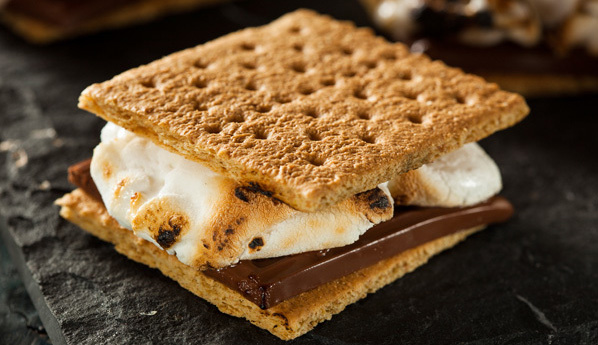

| Time |
Serivings |
Calories |
3m |
1 |
277 |
Ingredients
- 1 large marshmallow
- 1 graham cracker
- 1 (1.5 ounce) bar chocolate
Directions
Step 2
Heat the marshmallow over an open flame until it begins to brown and melt.
Break the graham cracker in half. Sandwich the chocolate between the cracker and the hot marshmallow. Allow the hot marshmallow to cool before eating.
Source: Allrecipes.com